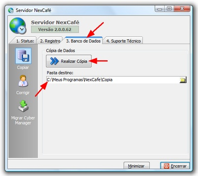

| 1. | Clique na aba "3. Banco de Dados" |
| 2. | Por padrão a cópia é realiza dentro da pasta COPIA que fica dentro da pasta NEXCAFE. Você pode também informar qualquer outro local destino. * |
| 3. | Clique no botão "Realiza Cópia" |
* A segurança dos seus dados depende do local onde você armazenar o seu backup. O local padrão (C:\NexCafe\Copia) deve ser usado apenas como o destino inicial. Você deve mover os dados para um CD-ROM, pen-drive ou outro computador da rede.
|

|